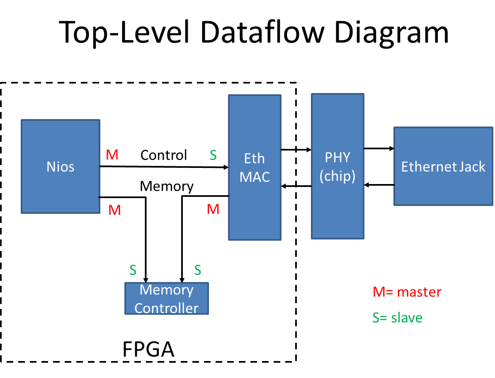
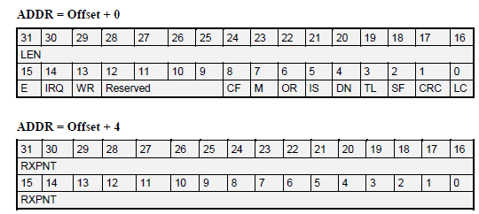
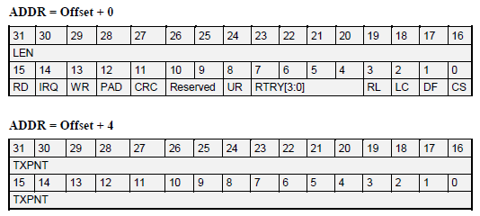
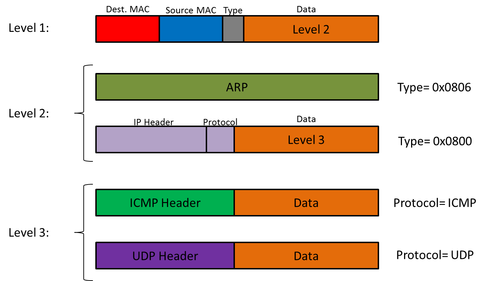
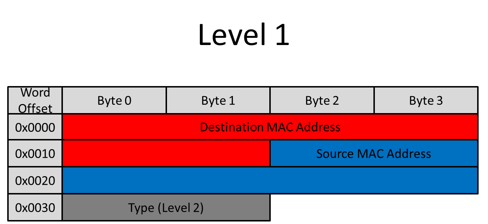
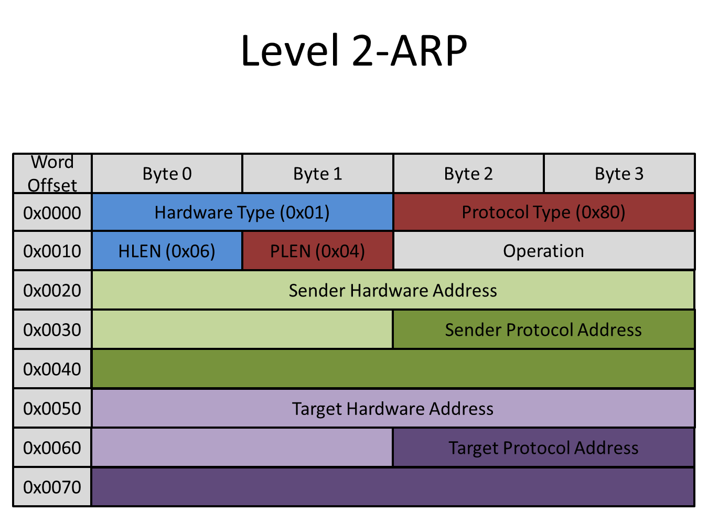
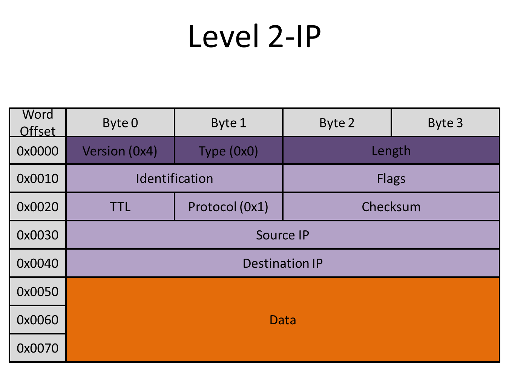
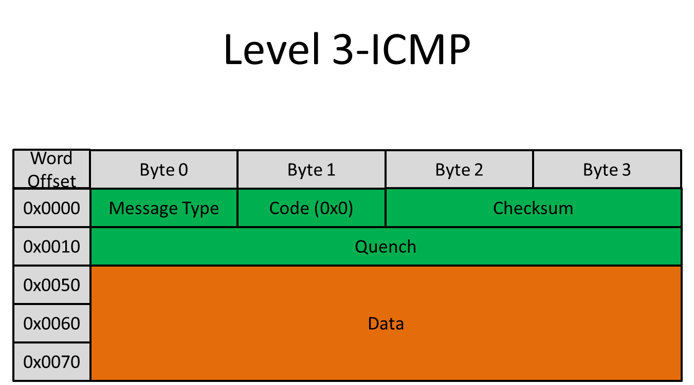
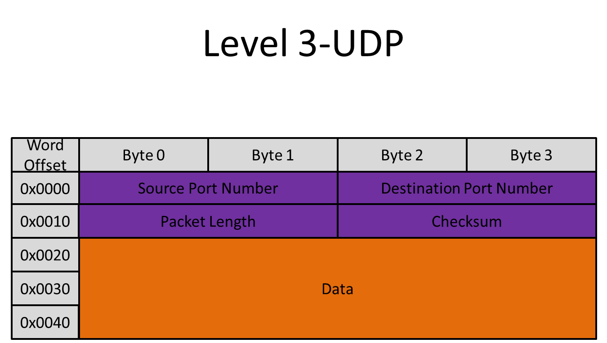

Introduction
Our project was to design an interface that enabled the FPGA board to communicate with other devices via the on-board Ethernet connection following several established networking protocols.
Project Goal
This year's ECE 5760 class used a Terasic DE2-115 board, containing an Altera Cyclone IV FPGA. Also on board are two Marvell 88ee1111 (Ethernet PHY) chips that allow two gigabit Ethernet connections. Unfortunately, the only IP cores that could be found to make use of the Ethernet were closed-source and required the use of Altera’s proprietary NIOS II processor, which is also closed-source. There are many applications and potential projects that can be implemented only with board that has the ability to connect to the Internet-a web server, a sensor that streams data to a server, or a network of several boards for a parallel processing scheme, to name a few. These Ethernet cores would be ideally open-source, very small, and easily configurable.
The Marvell Chips only provide a basic low-level interface to the Ethernet. They perform virtually no flow or error control, and only stream the data as it comes through. We managed to find an open-source (see Licensing) Ethernet Controller, "EthMac", on OpenCores.org that interfaced with the PHY chip and could capture entire Ethernet frames of data easily.
Ideally, we would have liked to connect this Ethernet core to a small, stack-based cpu, but found that for debugging, it was much easier to use an Altera NIOS II processor to manipulate bytes of data. The NIOS processor uses C to program, making math and string operations relatively easy. Additionally, the Altera Monitor provides an easy interface for compiling and communicating with the NIOS.
For our project, we designed a software interface that communicated with the board via the Altera Monitor. Through this interface, the board could receive data packets sent over an Ethernet network from an external source. Additionally, the board was able to transmit data packets of its own. The networking protocols that our interface was able to successfully implement are the ARP, PING (ICMP), and UDP protocols.
High Level Design
The Internet Protocol can be described as being composed of many abstraction "layers" that allows software to communicate over a hardware I/O protocol. The most basic layer is the Physical Layer. This is the actual Ethernet jack and Cat 5e/6 cable that physically connects devices. The Marvell PHY chip resides on this level. It simply decodes the bytes that stream from the lines, and gives signals when data collisions occur and when the line is busy.
The next layer is the Link Layer. This is where all the flow control, most of the error correction and much of the buffering happens. The Ethernet MAC core, a Media Access Controller, takes care of much of this. This is the first layer that actually looks at the raw data stream to see what it contains. It will buffer recieved frames and transmit them, do CRC error checking, ignore packets designated for other devices (by MAC address), and if the buffer is full, it can transmit pause frames to tell other devies to slow down transmission.
The interface we created does much of the work typically reserved for the next two layers, Network and Transport. Our module takes the Ethernet "frames" captured by the EthMAC, processes them, and determines what kind of response the device should send.

Above shows the connections between the different cores and the on-board PHY chip
Interface
The Ethernet MAC core connects to the PHY chip through the external FPGA pins. These pins are:
- Tx clock (I*)
- Tx nibble [3:0] (O)
- Tx enable (O)
- Tx error (O)
- Rx clock (I)
- Rx nibble [3:0] (I)
- Rx enable (I)
- Rx error (I)
- Collision detect (I)
- Carrier sense (I)
- 3 communication lines and a clock for reading and writing to status registers on the PHY chip.
* I/O means Input to/Output from the FPGA
The EthMAC controller also has two Wishbone Bus ports. The Wishbone bus is an open source bus specification that allows connection between a Master and a Slave device. Data can be transmitted both ways, but the key difference is that the Master device asks for or transmits data; the Slave device is always passive.
Although there are many more optional communication lines that the specification allows, our Wishbone implementation makes use of the following signals:
- An address, from the (M)
- Data (byte) select (M)
- Write Enable (M)
- CYC and STB to signify the start of a transfer session (M)
- Data OUT (M)
- Data IN (S)
- Command Acknowledge, or ACK (S)
- Error (S)
- A CLOCK and RESET signal. All Wishbone signals are active high.
The protocol is simple: the Master sets CYC and STB high, the Slave completes a write or read, and when the operation is complete, sets ACK (or Error) high for one cycle. The Master must wait until it recieves an ACK or Error signal, before proceeding. Only then is the data written, or the data read on the DATA IN line valid. For more details on the operation of the Wishbone bus, consult the Wishbone documentation (see References on left side column).
As seen in the Top-Level Diagram, the EthMAC Wishbone bus ports give it a master connection to a memory device, and a slave connection to a control device. The NIOS II proccessor acts as a master on the EthMAC's control port, and also has a master connection to the memory. This memory device is neccessary because the EthMAC core needs a memory device to dump packets into. It has a small amount of M9K blocks for buffering, but the actual data frames, in this case, are dumped into SRAM. There, they can be read out from memory by the NIOS.
Since NIOS II natively uses the Altera Avalon bus for its interconnects, in the SOPC builder we had to use the "Avalon to Exernal bus Bridge" module, available from the University Program IP. This generated an extremely simple bridge allowing easy reads and writes through built-in NIOS C calls. In implementing the bridge, we found SignalTap indespensible in verifying communications. In order to simplify debugging, for the two Master connections from NIOS, we made one wishbone port and a single Parallel I/O control line to mux between the EthMAC or memory slave port.
The memory device has two Slave ports, from which data read or write requests can be made. Because the Wisbone bus archetecture requires that a master must wait for an Acknowledge, and does not specify a number of clock cycles, the memory can simply handle one request, and ignore the other one until it is finished. If two requests arrive at the same time, this module gives priority to the NIOS. This allows everything to work well, since the EthMAC has a transmit and recieve buffer, allowing it to handle a bit of delay.
Documentation
The NIOS proccessor makes C calls to the Wishbone bus using
int data = IORD(WISH_BRIDGE_BASE + addr,0);
to do a read and
IORW(WISH_BRIDGE_BASE + addr,0,data);
to do a write.
Because the EthMAC core expects a 32-bit word, with 8-bit byte addressing on all Wishbone bus ports, the first 32-bit word is at address 0x00, and the second word at 0x04. For uniformity, all bus connections use this addressing scheme.
Since the SRAM only has 16 bits of data and 20 bits of address space, we had to create a virtual interface to allow EthMAC to interface properly. When a read write is requested, the Memory controller ignores the bottom two bits of the address, and virtually maps the 32-bit data word to two 16-bit data memory locations. This means for every wishbone bus operation, the memory controller makes two SRAM operations for the upper and lower 16-bits of data. The end result is the address space is limited, and bits [31:21] of the Wishbone bus addressing are ignored, but that still leaves plenty of room for data packets.
The NIOS wishbone bus is selected using a PIO call
IOWR_ALTERA_AVALON_PIO_DATA(WISH_SEL_BASE, sel);
where sel is set as 1 for memory operations and 0 for EthMAC control operations.
Normal Operation
The EthMAC core has two sets of internal registers that can be accessed from its control port. Addresses 0x00 through 0x50 contain general settings, interrupt flags, operation modes, and internal MAC address (which must be written to if you wish for the core to filter out packets destined for other MAC addresses). Address 0x400 through 0x7FF are reserved for transmit and receive Buffer Descriptors.
The Buffer Descriptors (which typically start at 0x600 for recieiving and 0x400 for transmitting) are two 32-bit word (64 bits total) registers that contains the information about an ethernet packet that was written to memory (for Rx) or about to be transmitted (Tx). The buffers have a 32-bit address pointer to the location in SRAM for which space is allocated for the packet. Once a Transmit buffer is marked as Ready, the EthMAC will begin transmitting the packet. When a Receive buffer is marked Empty, the EthMAC will put the first valid packet received into the memory address specified. Only when the Buffer Descriptors are marked finished (at the Empty or Ready field), should NIOS access that section of memory from SRAM. Our implementation only used one buffer each.
Receiver Buffer Descriptors

In our case, the bits used most frequently are:
- LEN- the number of received bytes associated with this descriptor
- RXPNT- the pointer to the buffer storing the associated frame
- E- Empty
- 0: The data buffer associated with this BD is filled with data, or there has been an error. It will not be used by the core.
- 1: the data buffer associated with this BD is empty, and ready to receive data
- IRQ- Interrupt Request Enable
- 0: no interrupt is generated after the data is received
- 1: after the data has been received (or if an error occurs), an interrupt will be asserted
- RW- Wrap
- 0: this BD is not the last buffer descriptor in the BD table
- 1: this BD is the last buffer descriptor in the BD table
Transmitter Buffer Descriptors

The important registers used are:
- LEN- the number of bytes associated with the buffer descriptor to be transmitted
- TXPNT- the buffer pointer when the associated frame is stored
- RD- Ready
- 0: The descriptor has no data associated with it, so it can be written to
- 1: The descriptor is ready for transmission and cannot be modified
- IRQ- Interrupt Request Enable
- 0: No interrupt will be generated after the data associated with this BD has been transmitted
- 1: An interrupt will be generated after data transmission
- WR- Wrap
- 0: This buffer descriptor is not the last BD in the buffer descriptor table
- 1: This buffer descriptor is the last BD in the buffer descriptor table
Internet Protocol Basics
Devices on a network have two addresses. The MAC address is a unique hardware address assigned to all PHY chips from the manufacturer. This is a six byte number that is never changed. The Internet Protocol Version 4 (IPv4) address is assigned either by a server or fixed ahead of time, and usually dictates the relation between devices on a network. This is a four byte number (typically represented by X.X.X.X, where each X is a number between 0 and 255). There are very specific rules and reserved addresses in normal use. Normally you would require a DHCP server to "hand-out" IP addresses on a network, but in our case, we used a fixed IP scheme where we designated each computer and device on our test network to a specific number.
Both the MAC address and IP of the sender and receiver are neccessary to send most types of information between two networked devices. Broadcast messages can also be sent, by specifying a blank MAC address in the "destination address" field, which are to be read by all devices. Devices that wish to send to a specific IP typically need to send a broadcast packet first, in order to find the MAC address of a specific IP. The device with that IP address is expected to respond back to the original device with a message containing its own MAC address. Since this initial broadcast is used by a machine on the server to verify the addresses of other machines, the protocol it follows is called the Address Resolution Protocol, or ARP.
A second communication protocol for messages is called the Internet Control Message Protocol (ICMP). There are many uses for ICMP, but we wanted to only implement one type of ICMP message, called PING. A Ping is a simple "Are you there?" message that the recieving device is expected to see and quickly respond back with "I'm here" and sending the original data packet back to sender. This is accomplished by swapping the values in two fields of the data packet, "Source IP" and "Destination IP." The device that initialized the Ping can recognize the original data packet. Using this information it is able to know that the other device exists, and how long it took for the packet to get there and back.
Finally, we were able to recieve and (almost perfectly) transmit data packets that followed the User Datagram Protocol (UDP). UDP packets are simple packets of data that are sent from one device to another, with no expectation of acknowledgement. This is usually used in cases when a single missing packet will not noticeably degrade message quality, or the packet is expected to be used and immediately discarded. Typically UDP is used for streaming music or video, or in videogames.
Note that packets following the ICMP and UDP protocols can only be transmitted if the target MAC and IP address are known by the sender, so often it will send an ARP first. This is why ARP is the most important protocol of the three, and had to be written and tested first.
Although each of these three protocols are unique and have specific uses, their actual encoding in a data packet are nested. In other words, the information indicating that a packet follows ICMP or UDP is encoded within one layer of a datastream that could also contain ARP:

The first twelve bytes of every data packet are the MAC addresses of the destination and source. These are followed by a two-byte "type" field, then additional data. If the value of these two bytes is 0x0806, the remaining information in the packet follows the ARP protocol. If their value is 0x0800, however, the remaining data constitutes a second header/data layer. The first part of this segment is the IP header, which is common to all data packets that are transmitted over any Internet protocol. The "Data" field of this layer contains yet another header/data layer whose contents depend on the "protocol" field of the IP header. It is this field that determines whether a transmitted data packet follows UDP or ICMP. When a device receives a packet it must parse it to determine which protocol it follows; since the encoding is nested, this information can be easily obtained from two fields: "type" and "protocol". The precise method with which the message recipient transmits a response varies with the protocol followed, but in all cases it must swap the values of the source and destination MAC addresses located in the first twelve bytes.
Ethernet Header

As this diagram illustrates, the information containing the MAC address of the destination is located at the very beginning of every data packet sent over the network. It is followed by the MAC address of the source, and finally the two bytes that determine whether the packet follows ARP or IP. When transmitting a packet, remember that the Destination and Source MAC address need to be adjusted accordingly.
ARP
This is one of the simplest types of data packet transmitted over a network. If a packet follows ARP, all of the relevant data that the packet contains is located on Level 2. There is no further nesting. The fields that were used by our interface most frequently are:
- Operation
- If the packet is a request, this field has the value 0x01
- If the packet is a response, this field has the value 0x02
- Sender Hardware Address
- Sender Protocol Address
- Target Hardware Address
- Target Protocol Address

When a device transmits an ARP request, the Target Hardware Address in the ARP header is blank (all zeros). The Target MAC address in the Ethernet header is 0xFFFFFFFFFFFF. This signifies a Broadcast; all devices can look at this packet, but only afer receiving devices check the Target IP address against theirs, do they know if the packet is truly for them.
In order for the recipient device to receive and transmit other types of packets, it must first respond to an ARP request with its own ARP reply. It does so by undertaking the following steps:
- Switch the value of the Operation field from 0x01 to 0x02 ("request" to "reply")
- Swap the Sender Hardware Address with the Target Hardware Address
- Swap the Sender Protocol Address with the Target Protocol Address, placing the device's self-known MAC in the Sender field.
- Transmit this ARP packet, keeping everything in the data field the same as the ARP request.
IP Header
If the "type" field of the Ethernet header contains the value 0x0800, there will be a second nested level. The contents of this level are described by the IP header, which ensures that the data packet follows the Internet Protocol. Our interface assumes that all devices are following IPv4, so the value of byte 0 of every IP-compliant packet that is transmitted is 0x4.

The contents of "data" depend on the value of "protocol". It contains a third nested layer of protocol information, either ICMP or UDP. If "protocol" has the value 0x01, then the resulting contents of "data" will follow ICMP. If "protocol" has the value 0x11, "data" will contain the encoding for a UDP packet.
The IP header, ICMP and UDP all have checksum fields in their headers. This checksum is computed as follows:
- Arrange all the bytes from the Header to the end of the Data packet into two-byte (16-bit) pieces.
- Sum them.
- If the 32-bit result has a carry in the upper 16 bits, add the upper 16 to the lower 16.
- Take the one's complement (Bitwise NOT).
ICMP
ICMP is a subset of IP. Thus, a packet that follows the ICMP protocol contains a IP header before the ICMP header. The data fields used most frequently by our interface are:
- Source IP
- Destination IP
- Message Type
- If the packet is an echo (Ping) request, this field has the value 0x8
- If the packet is an echo (Ping) response, this field has the value 0x0
- Checksum
- Data

An ICMP is generally used to directly message another machine on the network (ie, not broadcast). If the receivers' MAC address is known, the transmitting machine can simply ping its IP with an echo request. Once pinged, the receiver must respond with another ICMP packet. In order for the device to generate such a response, it does the following:
- Adjust the IP header by swapping the Source IP and Destination IP.
- Change the Message Type from 0x8 to 0x0.
- Recalculate the checksum.
- Transmit this ICMP packet back to sender, keeping everything in the data field the same as the ICMP request.
The reply checksum was easy to compute without actually reading the whole packet. Since the reply only needs to change one bit (Message Type), we can:
- Take the ones complement (inverse) of the existing checksum.
- Subtract 0x0800.
- Take the ones complement of the result.
UDP
This type of packet also assumes that both conversing machines know each others' IP and MAC addresses. The initiating machine must pick a virtual "port" on the receiver with which to communicate to. Once it does so, it can transmit data directly to the device, and the device can use the port number in order to determine what the UDP packet should be used for. There are lots of reserved port numbers for operations such DHCP, and the port number is one way to determine what the data in the UDP packet means. The UDP packet is very simple, contaning only:
- Source Port Number (bytes 0-1)
- Destination Port Number (bytes 2-3)
- UDP header+data length (bytes 4-5)
- Checksum (bytes 6-7)
- Data (bytes 8-end)

The checksum is defined just as in ICMP, and is done over the UDP header and data (again, assume checksum field is 0x0 when computing the checksum of itself). The Data field can contain anything, including ASCII character bytes representing text. When a device receives a UDP packet, it is not obligated to respond immediately. Rather, when the UDP conversation is established, the device can transmit directly to the initiating machine at any point. For our testing interface, this response can be generated from the Altera Monitor terminal. A user can type anything into the terminal and transmit it via UDP to any connected machine. To generate your own UDP packet:
- Create correct Ethernet and IP headers
- Assign the proper source and destination port numbers
- Insert the desired UDP data at the end of the packet
- Adjust the UDP header+data length
- Recalculate the checksum of the UDP header and data (sometimes optional)
- Adjust the length field in the IP header
- Transmit the new packet back to its destination
In this manner, a device can communicate via Ethernet to a connected machine and transmit a UDP message.
Debugging
In order to ensure that the DE2-115 board was receiving data packets that followed each of the three implemented protocols, we connected it to our computer (Mac OS X 10.5) via a network switch, and manually set IP addresses in our computer's Ethernet settings. We then used "ping" to transmit ARP's and ICMP messages, and NetCat (available by default on Linux and OS X as the command "nc") to transmit UDP packets.
To investigate the packets received by and transmitted from the board, we used WireShark to capture packets sent and recieved by the Mac. This allowed us to verify packets were sent, analyze the them byte-for-byte, and determine the field names for each byte in a packet. WireShark will recognize the packet protocol, indicate if the length or checksum is incorrect, and even display, for example, that the first six bytes represent the Destination Hardware MAC Address. Without it, completing this project would have been much, much more difficult. It was instrumental to debugging, and learning what different types of packets looked like (in addition to online research).
What was difficult?
We had particular difficulty designing the Altera-to-Wishbone bus bridge. Although the implementation itself was not ultimately complex, the research required to find the precise method that succeeded was time consuming.
Additionally, we encountered significant issues interfacing with the memory. Our project utilizes SRAM, and we found that sometimes the memory would appear to fail completely. We coded a simple loop to write to and immediately read from memory as a memory test in order to debug. We spent a large portion of our time dealing with this issue, which ultimately was not resolved.
The software component of our project was not overtly difficult as it was mostly in C, but since that language cannot natively handle the String data type intuitively, it took a great deal of time to perform the character manipulation necessary to proplerly parse and re-transmit UDP packets.
Results and Conclusions
This project was designed to be used as a building block for others. We hope that it has been explained thoroughly enough that future users can build upon it with relative ease.
What Works:
- It responds to an ARP perfectly.
- It responds to a Ping correctly with a slight (3ms) delay.
- UDP packets are recognized and their data is correctly printed to the Altera Monitor terminal.
- The terminal interface allows easy access to read or write to memory, as well as manually set any control register or buffer descriptors in the EthMAC core.
What Doesn't:
- Our device only responds to packets sent to it, and uses them to formulate a reply. It does not actually create a packet from scratch.
- The Memory controller does not have support for byte select. It is possible that the EthMAC controller may make use of this line in reads and writes.
- The memory has a tendency to fail. Certain bits in the memory could not be written to. This was difficult to debug because it would happen randomly. We believe that when compiling the design under Quartus, occasionally the fitter has a tendency to wire the memory incorrectly, but it is more likely that there is an error in the Verilog code to prevent this from ever happening.
- We had trouble transmitting UDP packets. There are a lot of length-checks and error corrections that have to be coded into the packet, and we ran out of time before we were able to properly debug them all. We could send packets, and although we could send some correctly, most tended to be misshapen.
- The device has a MAC address, but we had trouble reading it from the PHY chip. There is very little documentation avalible on the Marvell 88ee111 PHY chip. We had to make up a MAC address for the device.
All protocols that were followed by the data packets used in our project satisfy industry standards for networked communication via Ethernet. For All packets transmitted by the board contain an Ethernet header that satisfies the standards set down by IEEE 802.3. The ICMP and UDP packets that contain IP headers satisfy Internet Control Protocol Version 4 (IPv4) as specified by RFC 791.
The Wishbone Bus is open-source and public domain.
Several Altera IP cores are called, and the NIOS II C code and SOPC info is included, but Altera hardware IP is excluded (you will have to open the Quartus SOPC builder and re-generate the proprietary files).
At no point did we attempt to reverse-engineer an existing design; to our knowledge, none of the hardware or software structures used in this project are patented or trademarked by any individual or corporation. We do not believe than any patents are available for this project as it is an implementation of existing standards and protocols.
Although our project does enable the Altera DE2-115 board to transmit information, as of the completion date of our project it is only capable of transmitting to other members of a closed network. It cannot, as of this writing, connect to the Internet or communicate with an individual that has not willingly entered the network via physically inserting an Ethernet cable into his or her machine. As a result, we do not operate under any jurisdiction restricted by the Federal Communications Commission or any of its affiliated agencies or institutions.
Division of Work
| Task | Person Responsible |
|---|---|
| Wishbone specification | Michael |
| Ethernet Packet research | Alex |
| Coding | Michael |
| Testing | Alex and Michael |
| Web Page | Alex and Michael |
Code Use and Download
Important Reminders for Use:
The Ethmac Controller requires two FIFO blocks and one Dual-Port Ram block. These were created using Quartus Megawizard. Instantiating these modules in M9K blocks to work with our board are the only changes made to the original Ethmac code. These modules will have to be created for the project to work.
Don't forget to adjust the pin jumper on the DE2-115 Board to enable 10/100 Megabit (MII) connections. By default, the jumper is set to Gigabit (GMII) only. This project only makes use of the MII protocol, which differs from the GMII protocol.
Our project makes use of the Ethernet 0 Port on the DE2-115 Board. The Ethernet 1 port is unused.
Please connect the board to a private network with NO DHCP server. The project uses a fixed IP (take a look at the C-code). The board has not been rigorously tested, so make sure there is no Internet connection. The board can also pick up packets not intended for it, so be sure not to connect to any large public network (ie Cornell Wifi, "RedRover"), where packet-sniffing could get you in trouble!
Reading through the EthMac documentation is highly reccomended. It has many useful features, and the pdf documents written for it are very detailed. The same goes for the Wishbone Specification.
Licensing and Download
We release our code under the GNU Lesser General Public License (v3):
http://www.gnu.org/licenses/gpl-3.0.html
The Ethernet MAC core (from OpenCores.org) is licensed under the GNU LGPL as well.
This project was intended to only be a starting-block for other projects, and more work is needed to reach the goals we envision. We ask that if you make modifications or improvements, please let us know.
Download Source Code: ethcomm.zip
Contact Information
Michael Spanier (mis47@cornell.edu)
Alexander Gorenstein (ayg6@cornell.edu)
References and Resources
- Wishbone Bus Specification
- Ethernet MAC (ethmac) core and Documentation
- Tiny Stack-Based CPU (Pancake) on ECE 5760 course website
- DE2-115 FPGA Board User Manual (from Terasic)
- WireShark (VERY useful for examining packets)